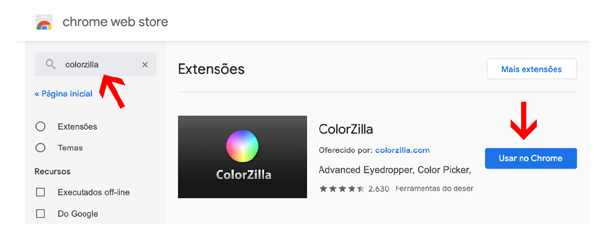

O Poder das Cores - ( CAP. 13 )
Aula 5 - Como capturar cores da tela?
Instalar a extensão Colorzilla

Abra a Página que você quer e Utilize a ferramenta para descobrir a cor desejada
Voltar para página Inicial